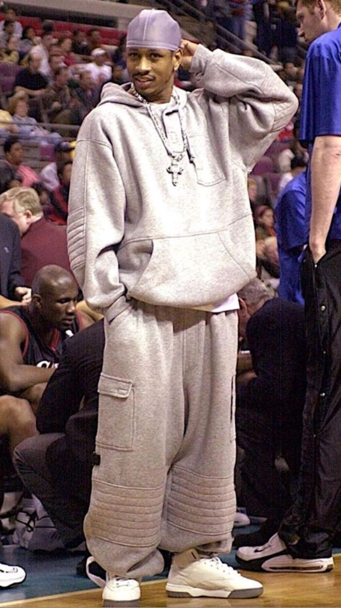
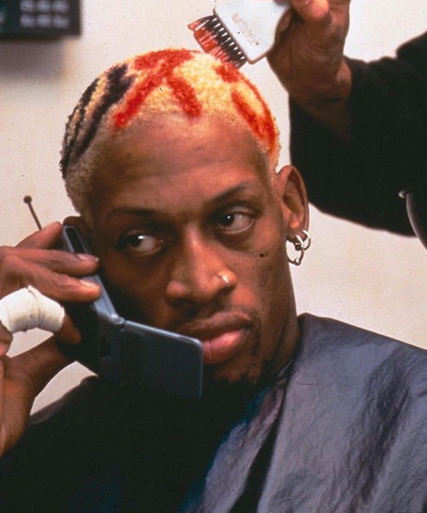

Allen Iverson
Allen Iverson, icônico tanto nas quadras quanto fora delas, revolucionou o estilo de vestimenta na NBA. Conhecido por sua atitude desafiadora e personalidade única, Iverson trouxe para o mundo do basquete uma mistura única de moda urbana e streetwear. Suas escolhas de roupas, que incluíam bandanas, bonés de aba reta, camisetas oversized e correntes chamativas, eram uma expressão de sua identidade autêntica e seu estilo de vida.
O impacto de Iverson na moda da NBA foi profundo. Ele desafiou as normas tradicionais de vestimenta esportiva, inspirando outros jogadores a abraçar a individualidade e experimentar com seu próprio estilo. Sua influência foi além das quadras, moldando a cultura da moda urbana e influenciando uma geração de jovens que viam nele uma representação de autenticidade e liberdade de expressão.

Dennis Rodman
Dennis Rodman, conhecido como "The Worm", foi outro jogador da NBA que deixou uma marca indelével no mundo da moda. Com sua personalidade excêntrica e estilo único, Rodman desafiou as convenções tradicionais de moda tanto dentro quanto fora das quadras. O estilo de Dennis Rodman era uma explosão de cores, padrões e acessórios extravagantes. Ele não tinha medo de experimentar com cortes de cabelo chamativos, pinturas faciais e roupas ousadas que muitas vezes desafiavam as expectativas da moda convencional.
